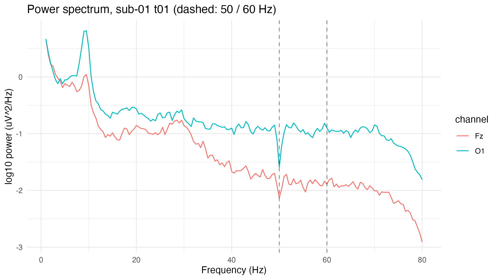
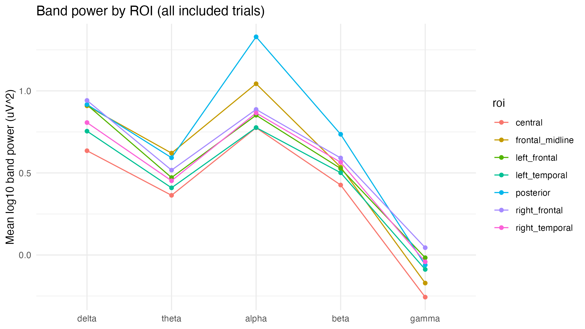
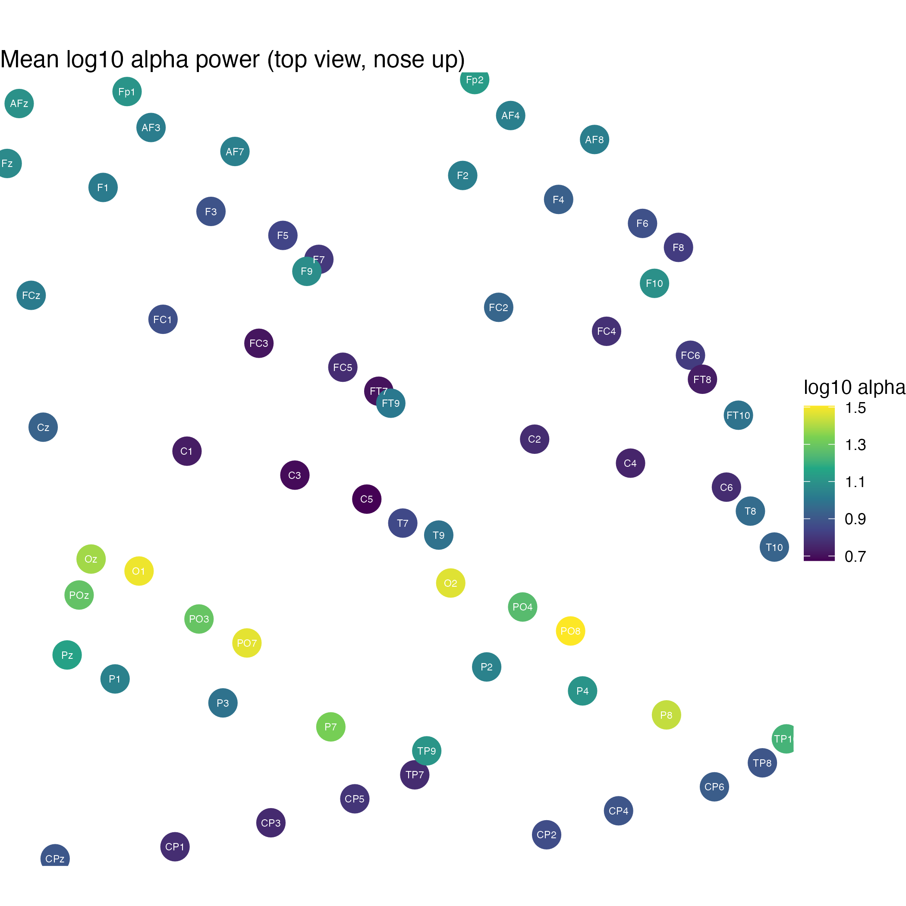
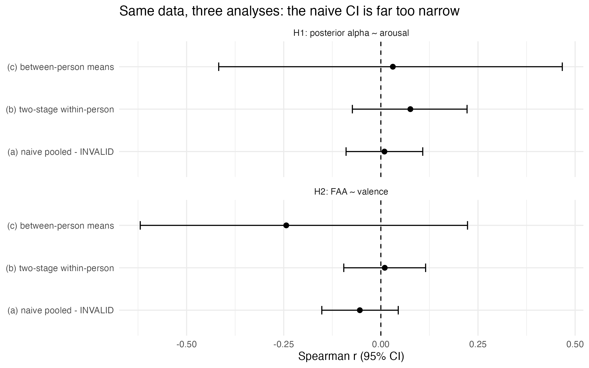
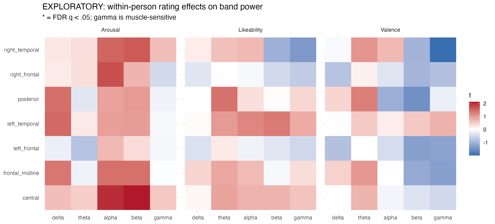
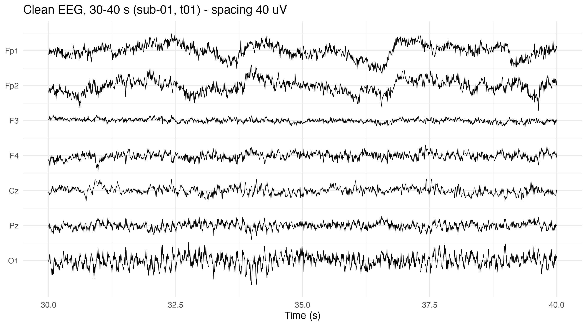
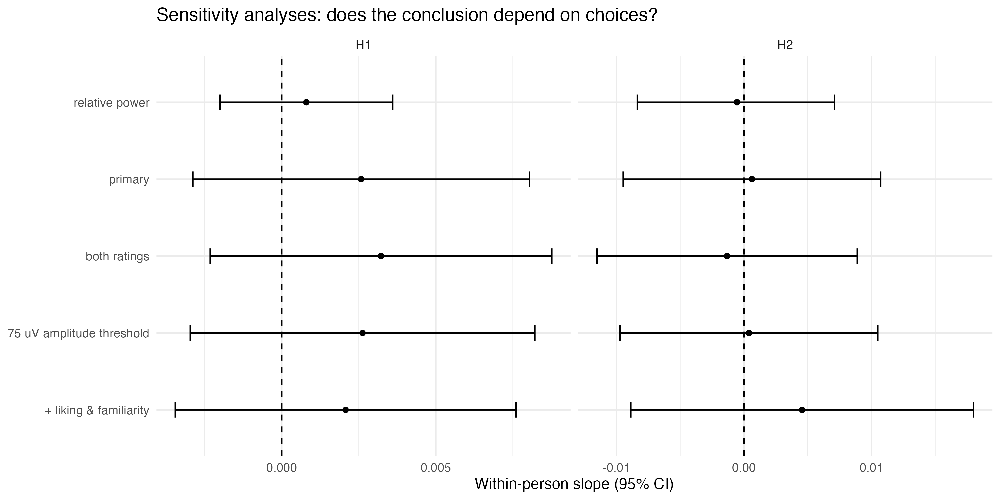

Part 0. Start here
0.1 Executive overview of your project
0.2 Your research question in plain English
0.3 Where you are now: an honest knowledge gap analysis
0.4 The knowledge map and the four kinds of knowledge
0.5 The staged learning roadmap
Part 1. Emotion and music (Stage 1)
Part 2. The brain and EEG (Stage 2)
Part 3. Signals and spectra (Stage 3)
Part 4. Cleaning EEG: preprocessing (Stage 4)
Part 5. From spectra to features (Stage 5)
Part 6. Research design (Stage 6)
Part 7. Statistics for repeated measures (Stage 7)
Part 8. Interpretation and honesty (Stage 8)
Part 9. Your dataset, file by file
Part 10. Your code, script by script
Part 11. Your results, explained
Part 12. Methods review: issues found and how to fix them
Part 13. Common mistakes and how to avoid them
Part 14. Exercises, checkpoints and the first lessons
Part 15. Glossary in plain English
Part 16. Annotated bibliography and learning resources
Appendix. Answers to the self checks
Twenty adults each listened to the same twenty songs, about two minutes of music per song, while their brain's electrical activity was recorded from 66 scalp electrodes. After each song they rated how pleasant it felt (valence, 1 to 9), how energised it made them feel (arousal, 1 to 9), how much they liked it (1 to 5) and how familiar it was (1 to 5).
Your project asks a careful question: when a particular person feels more aroused or more positive than usual, does their EEG look different in a predictable way? And, more strictly: does that hold for the personal part of the feeling, the part that differs from how everyone else felt about the same song?
You built a five phase pipeline in R:
Where the results stand. None of the preregistered hypotheses was supported. The estimated within person relationships were very close to zero, and the confidence intervals are narrow enough to rule out moderate effects. That is a real, publishable kind of result if it is reported carefully. Part 11 explains exactly what it does and does not mean.
report.qmd has the correct citation. Fix the README..set files of 131 seconds. Your copy may be an earlier release. Record which version you downloaded before you call this a documentation error (Part 9).Here is your preregistered question:
Let me translate it phrase by phrase.
| Phrase | What it really means |
|---|---|
| "Within individuals" | We compare each person only with themselves. Not "do happy people have more alpha than sad people" but "when you feel happier than your own average, is your alpha different from your own average?" |
| "self reported emotional experience" | What people said they felt, on rating scales, after each song. Not what the music "expresses", and not a direct measure of emotion. |
| "associated with" | Goes together with, statistically. Not "causes". |
| "EEG band power" | How strong the brain's electrical rhythms are in particular speed ranges, averaged over two minutes. |
| "person specific part of the experience" | How much your rating differed from everyone else's rating of the same song. |
| "beyond what is shared across listeners" | Because everyone heard the same sound, anything that follows the personal part cannot be explained by the sound itself. |
Why it matters. Lots of studies claim to "decode emotion from EEG". Many of them cannot tell whether the EEG followed the feeling or just the sound (a loud, fast song changes the EEG whether or not anyone feels anything). Your design asks the stricter version of the question. That is the scientific contribution.
From the repository, the project is technically advanced: it reads raw MATLAB files byte by byte, validates its spectrum code on a known sine wave, uses mixed models with a preregistered fallback rule, and runs leave one subject out checks. You told me you rushed through this with an AI assistant. So the gap is not "the project is missing things"; the gap is that the project is ahead of your understanding. That is fixable, and the code gives us a perfect textbook.
| Area | What the project already does | What you need to be able to do yourself |
|---|---|---|
| Emotion science | Uses valence and arousal ratings from the Self Assessment Manikin | Explain the circumplex model, felt versus perceived emotion, and why one rating after two minutes is a limitation |
| EEG physics and physiology | Treats data as microvolts at 66 sites, average referenced | Explain where the signal comes from, what a reference is, and what EEG cannot see |
| Signal processing | Hann windowed FFT, Welch averaging, band integration | Explain a spectrum, frequency resolution, leakage, why we log transform |
| Preprocessing | Bad channel rules, epoch rejection, a 30 epoch minimum | Justify each threshold and say what would change if it moved |
| Features | Posterior alpha, frontal alpha asymmetry, 7 regions | Explain what each feature is thought to index and how contested that is |
| Design | Within person design, consensus versus deviation split, preregistration | Defend the design against "the music confounds it" and "the sample is too small" |
| Statistics | lme4 mixed models, centring, REML, profile CIs, likelihood ratio tests, FDR | Read a model formula aloud, explain every number in the output, and spot a bad model |
| R programming | tidyverse pipelines, functions, arrays, purrr, ggplot2, Quarto | Run one phase, inspect objects, change one setting, and see what happens |
| Writing | Report template with every [WRITE] block empty | Write the introduction, methods, results and discussion in your own words |
Below is the whole map of what the project needs. The arrows show prerequisites: you need the thing at the tail before the thing at the head makes sense.
The labels below tell you how deeply to learn each item.
| Kind | Items for your project |
|---|---|
| Conceptual must understand | Valence and arousal; felt versus perceived emotion; where EEG comes from; what a reference is; frequency and power; alpha and what it is thought to index; frontal asymmetry theory and its controversy; within versus between person; pseudoreplication; stimulus confounding; what a confidence interval is; why a null is not proof of absence; correlation versus causation |
| Technical must be able to do | Run each phase in R; read tibbles and arrays; use filter, mutate, group_by, summarise, joins and pivots; plot a spectrum; fit and read an lmer model; centre a predictor; extract a CI; render the Quarto report |
| Methodology must justify | Preregistration and deviations; exclusion rules; threshold choices; ROI choices; random effects structure and the singular fit fallback; the consensus and deviation split; Bonferroni versus FDR; sensitivity analyses; what effect sizes your CIs rule out |
| Implementation detail black box for now | The byte level MATLAB fallback reader; the exact FFT scaling constant; lme4's optimiser; how Satterthwaite degrees of freedom are computed; how profile likelihood intervals are computed; Quarto's rendering internals |
Do not try to learn everything at once. Each stage ends with a checkpoint. Do not move on until you can pass it without looking at notes. Time estimates assume about six to eight focused hours a week.
| Stage | Topic | You will learn | Checkpoint (pass before moving on) | Time |
|---|---|---|---|---|
| 0 | R and data basics | Projects, here, tibbles, the pipe, the five core dplyr verbs, ggplot2 basics, reading CSV and TSV | Load analysis_trials.csv, compute each participant's mean arousal, and plot it | 1 to 2 weeks |
| 1 | Emotion and music | Valence, arousal, circumplex, SAM, felt versus perceived emotion, induction mechanisms | Explain in two minutes why a song can be rated "sad" yet "pleasant" | 1 week |
| 2 | Brain and EEG basics | Neurons to scalp, electrodes, 10/20 system, sampling rate, reference, volume conduction, artefacts | Draw how a cortical signal reaches an electrode and explain average reference | 1 to 2 weeks |
| 3 | Signals and spectra | Frequency, Fourier idea, power spectrum, Welch, windowing, resolution, 1/f, log power | Explain why a 2 second epoch gives 0.5 Hz resolution, then reproduce p3_validation_sine.png | 2 weeks |
| 4 | Preprocessing | Filters, notch, artefacts, bad channels, epochs, rejection thresholds | Run preprocess() on one file and explain every element of its output | 1 to 2 weeks |
| 5 | Features | Band power, ROIs, posterior alpha, frontal alpha asymmetry | Compute FAA by hand for one trial from bandpower_channels.csv | 1 week |
| 6 | Research design | Variables, hypotheses, confounds, preregistration, the consensus and deviation split | Defend your design against three critiques in writing | 1 week |
| 7 | Statistics | Pseudoreplication, centring, mixed models, random slopes, singular fits, CIs, LRT, multiple comparisons, power, equivalence | Fit the H1 model yourself and explain every line of summary() | 3 weeks |
| 8 | Interpretation | Nulls, effect sizes, causation, reverse inference, limitations | Write the results paragraph for H1 without using the words "no effect" | 1 week |
| 9 | Apply | Fix the issues in Part 12, rerun, write the report | A rendered report you can defend line by line | 3 to 4 weeks |
Before any brain waves, we need to be clear about the thing we are trying to relate them to: emotional experience.
In plain words
Valence is how pleasant or unpleasant something feels. Arousal is how activated or energised you feel, from sleepy and calm to wired and excited. They are two separate dials. Russell's circumplex model proposes that many everyday emotion words can be placed on a circle defined by these two dials: excited is pleasant and high arousal, relaxed is pleasant and low arousal, tense is unpleasant and high arousal, gloomy is unpleasant and low arousal (Russell, 1980). established as a useful description; whether it captures everything about emotion is debated
Why it matters
Your hypotheses are built on these two dials: arousal for H1 and valence for H2. If the dials were not distinct, the hypotheses would blur together.
Picture it
Think of a light dimmer (arousal) and a colour filter from cold blue to warm orange (valence). Any mood is one setting of both.
In your project
Your Phase 1 song map (p1_song_map.png) shows that arousal separated the songs well, but valence was squeezed: songs meant to be "negative" were mildly unpleasant at most. That matters for H2: if valence barely varies, there is little variation to relate to the EEG.
Common mistakes
Check yourself
Q1.1 A participant rates a song valence 8, arousal 2. Where on the circle is it, and which song category would you guess?
In plain words
SAM is a set of cartoon figures that people pick from to report pleasure, arousal and dominance without needing emotion words (Bradley and Lang, 1994). Your dataset used it for valence and arousal on 1 to 9 scales.
Why it matters
It is quick and language free, so it is standard. But it is still a self report, given once, after the music ended.
Picture it
It is like a restaurant asking you to tap a smiley face on the way out. Useful, but it compresses a whole meal into one tap, and it is shaped by the last course and by how you generally use smileys.
In your project
Each trial has exactly one valence and one arousal number for a 120 second excerpt. Any moment to moment changes in feeling, such as a chorus that gives chills, are invisible. Your EEG is also averaged over the whole excerpt, so both sides of the comparison are two minute summaries.
Common mistakes
Check yourself
Q1.2 Name two reasons why a single rating after the song might not match what the person felt during the song.
In plain words
Music can express an emotion that you recognise ("this sounds sad") without you feeling it, and sometimes you feel something different ("sad music I enjoy"). Researchers call these perceived and felt emotion, and they do not always match (Gabrielsson, 2002). established distinction
Why it matters
Your research question is about subjective experience, so it needs felt emotion. Whether participants rated felt or perceived emotion depends on the instructions, which the dataset page does not describe in detail.
Picture it
An actor can portray grief perfectly while feeling proud of the performance.
In your project
The song categories (HVHA, LVLA and so on) are about what the songs were chosen to express. The ratings are what people reported. That gap is exactly why your Phase 1 manipulation check exists. Write in your limitations that the rating instructions (felt or perceived) are not documented, unless you can find them.
Common mistakes
Using the song category as if it were the listener's feeling. Your project correctly uses ratings instead.
Check yourself
Q1.3 Why is "sad but pleasant" not a contradiction?
In plain words
Juslin and Västfjäll (2008) argued that music can trigger emotion through several routes: reflexes to sudden or loud sounds, learned associations, emotional contagion (mimicking the music's expression), mental imagery, personal memories, and expectations about where the music will go. influential framework; individual mechanisms are still being tested
Why it matters
Some routes are shared by everyone (a loud crash startles nearly anyone), others are personal (a song that reminds you of a breakup). This is the scientific basis for splitting ratings into "song consensus" and "personal deviation".
Picture it
The same song is a common key, but each person's lock (memories, taste, mood that day) is different.
In your project
Your README reports that the song accounts for roughly half of valence variation and two thirds of arousal variation, with person level rating habits only about 4%. The remainder, the "personal reaction" share (about 47% for valence and 29% for arousal), is what the personal deviation tries to capture. Note that it also contains plain measurement noise.
Common mistakes
Calling the residual "personal experience" without the word "plus noise". If someone would give a different rating on a second hearing, that inconsistency also lands in the residual.
Check yourself
Q1.4 Which of the six mechanisms would you expect to vary most between people, and why?
In plain words
Music evoked emotions involve deep structures such as the amygdala, hippocampus and the reward system (nucleus accumbens), as well as cortex (Koelsch, 2014). Scalp EEG mainly picks up activity from the outer cortex. So EEG sees only part of the emotional brain, and it sees it blurred.
Why it matters
A null result from scalp EEG band power does not mean "the brain does not respond to emotion". It means this particular coarse summary did not track the ratings.
Picture it
Listening to a stadium crowd from outside the stadium: you hear when the whole crowd roars together, but you cannot hear one person shouting.
Common mistakes
Saying "EEG measures emotion". It measures voltage. Emotion is an interpretation layered on top.
Check yourself
Q1.5 Rewrite "alpha measures arousal" into a sentence a careful scientist would accept.
In plain words
Neurons communicate with tiny electrical currents. A single neuron is far too weak to detect through the skull. But in the cortex, large pyramidal neurons line up in parallel like trees in a planted forest. When thousands to millions of them receive synaptic input at the same time, their small currents add up to a field strong enough to reach the scalp as a few to tens of microvolts (Nunez and Srinivasan, 2006; Cohen, 2014). established
Why it matters
EEG favours activity that is synchronised and near the surface. Rhythms such as alpha are visible precisely because many neurons fire in step.
Picture it
One person clapping in a stadium is inaudible from outside. Fifty thousand people clapping in rhythm is easy to hear.
In your project
Your posterior alpha and frontal alpha outcomes are big, synchronised cortical rhythms. That is the kind of signal EEG is good at.
Common mistakes
Thinking an electrode over a region records only that region. Because of volume conduction (2.4), each electrode picks up a weighted mix of many sources.
Check yourself
Q2.1 Why would a small, deep structure like the amygdala contribute little to scalp EEG?
In plain words
Electrode names tell you where they sit. The letter is the region: Fp frontopolar, F frontal, C central, T temporal, P parietal, O occipital, with combinations like PO (parieto occipital) and FC (fronto central). Odd numbers are on the left, even numbers on the right, and "z" means the midline. So F3 is left frontal, F4 is right frontal, Oz is the back midline.
Why it matters
Your hypotheses are defined by electrode names: posterior alpha uses O1, O2, Oz, PO3, PO4, POz and Pz; frontal asymmetry uses F3 and F4.
Picture it
Common mistakes
Mixing up left and right. Odd is left. Your FAA formula uses F4 (right) first.
Check yourself
Q2.2 Where is PO4? Which hemisphere is T7 on?
In plain words
A continuous voltage is stored as a list of snapshots. Your data has 1000 snapshots per second (1000 Hz). The fastest rhythm you can represent is half the sampling rate, the Nyquist frequency, here 500 Hz. Your band of interest stops at 45 Hz, so 1000 Hz is more than enough.
Why it matters
It sets the size of your data (66 channels times 131,000 samples per recording) and the time axis: sample number n happens at time (n minus 1) divided by 1000 seconds.
Picture it
A film camera at 24 frames per second can make a fast spinning wheel look like it turns backwards. Sampling too slowly makes fast things masquerade as slow ones (aliasing).
In your project
In preprocess(), the line that builds time_s converts sample indices into seconds, and the music window keeps samples from 5 s up to, but not including, 125 s.
Check yourself
Q2.3 How many samples are in one of your 2 second epochs?
In plain words
Voltage is always a difference between two points. An EEG "channel" is the voltage at one electrode relative to a reference. Choose a different reference and every channel changes. With an average reference, the reference is the mean of all electrodes, so the channels sum to roughly zero at every moment. Separately, the head is a conductor, so activity from one source spreads to many electrodes: this is volume conduction.
Why it matters
Frontal alpha asymmetry compares F4 with F3. If the reference itself carries alpha, it can distort that comparison. Methodological reviews of FAA recommend checking more than one reference scheme (Allen, Coan and Nazarian, 2004; Smith et al., 2017). established methodological concern
Picture it
Measuring the height of everyone in a room. You can measure from the floor, or from the average person's height. The differences between people stay the same, but each individual number changes, and if the floor is wobbly, everyone's number wobbles with it.
In your project
Phase 2 discovered that the 66 channels sum to about zero, so the data were average referenced upstream. Your code deliberately does not re reference. That is a reasonable choice, but for FAA it should be a named limitation or a sensitivity check (Part 12).
Common mistakes
Believing a channel "belongs" to the brain area under it. Believing the reference does not matter for power. It does, especially for asymmetry measures.
Check yourself
Q2.4 If every channel had the same 10 Hz rhythm in perfect sync, what would average referencing do to it?
In plain words
Many things other than the brain create voltage at the scalp. Blinks and eye movements make large slow waves, strongest at the front (Fp1, Fp2). Jaw and neck muscle tension creates fast, spiky activity that overlaps the beta and gamma bands (Muthukumaraswamy, 2013). Mains electricity creates line noise at 50 Hz in Europe and Asia (60 Hz in the Americas). Loose electrodes produce flat lines or huge drifts.
Why it matters
Artefacts can create fake relationships. For example, people might tense their jaw during exciting music. That would raise gamma power and correlate with arousal without any brain involvement.
Picture it
Recording a quiet conversation in a café: the coffee machine, the door slam and the hum of the fridge are all in your recording.
In your project
Phase 2 found blinks are barely visible at Fp1 (correlation with the eye channel about minus 0.09), suggesting ocular artefacts were removed upstream, though no record of that exists. Phase 3 flags gamma results as muscle sensitive. Both are good habits.
Common mistakes
Treating "not visible" as "removed". A weak blink correlation is consistent with removal, but it could also mean the eye channel itself was cleaned. Say "probably", as your preregistration does.
Check yourself
Q2.5 Which of your five bands is most at risk from muscle activity, and which from eye movements?
In plain words
Any wiggly signal can be described as a sum of simple waves (sines) of different speeds and sizes. The speed is the frequency, measured in hertz (cycles per second). The Fourier transform is the mathematical tool that finds how much of each frequency is present. The fast Fourier transform (FFT) is just an efficient way to compute it.
Why it matters
All your outcomes are statements about frequency: "how much 8 to 13 Hz activity is there?"
Picture it
A chord on a piano sounds like one thing, but your ear can tell it is three notes. The Fourier transform is the ear that splits the chord into notes.
Common mistakes
Thinking "a 10 Hz rhythm" means neurons fire 10 times a second. It means the summed field oscillates at that rate.
Check yourself
Q3.1 A rhythm completes 25 cycles in 2 seconds. What is its frequency, and which of your bands is it in?
Learn more
A visual introduction that many beginners find helpful is the 3Blue1Brown video "But what is the Fourier Transform? A visual introduction". Cohen (2014), chapters 10 and 11, is the research level version.
In plain words
The power spectrum says how much signal energy sits at each frequency. "Density" means it is expressed per hertz (µV² per Hz), so the area under the curve over a range of frequencies gives the power in that range. Welch's method (Welch, 1967) cuts a long recording into short segments, computes a spectrum for each, and averages them. Averaging makes the estimate far less noisy.
Why it matters
A single spectrum from one long piece of noisy data jumps around wildly from bin to bin. Averaging 60 short spectra gives a smooth, trustworthy curve.
Picture it
Judging a restaurant from one meal versus from sixty meals.
In your project
epoch_psd() computes one spectrum per 2 second epoch per channel; compute_features() then averages the spectra of the kept epochs. That average is exactly Welch's method with non overlapping segments. Phase 3, step 13 tests the code on a synthetic sine wave of known power and checks the answer (p3_validation_sine.png). That validation step is excellent practice: keep it and describe it in your methods.
Check yourself
Q3.2 If you used 4 second epochs instead of 2 second ones, what would happen to the number of epochs averaged and to the frequency resolution?
In plain words
The spacing between frequency bins is 1 divided by the segment length. A 2 second epoch gives 0.5 Hz steps: 0, 0.5, 1.0, 1.5 Hz and so on. Chopping a signal abruptly creates false energy at neighbouring frequencies (spectral leakage). Multiplying each segment by a smooth bell shaped "Hann window" that fades to zero at the edges reduces leakage.
Why it matters
It explains two lines of your code: EPOCH_S equal to 2 gives 0.5 Hz resolution, and the hann vector in epoch_psd().
In your project
Your bands use half open intervals: alpha includes 8.0 Hz up to 12.5 Hz, and the bin at exactly 13.0 Hz belongs to beta. That avoids counting any bin twice. The normalisation constant (srate * window_power) and the doubling of non edge bins make the units come out as µV² per Hz. You can treat those constants as a black box, as long as the sine validation passes.
Check yourself
Q3.3 Which frequency bins (in Hz) are summed to make your theta band?
In plain words
By convention the spectrum is divided into bands: delta (1 to 4 Hz), theta (4 to 8), alpha (8 to 13), beta (13 to 30) and gamma (30 to 45 in your project). The exact edges vary between labs. Under the rhythmic peaks there is a smooth background where power falls as frequency rises, often called "1/f" or the aperiodic component. Recent work shows that changes in this background can masquerade as changes in band power (Donoghue et al., 2020). bands are conventions; the aperiodic issue is well supported and increasingly standard to address
Why it matters
If the whole background shifted up for a trial, alpha "band power" would rise even if the alpha rhythm itself did not change. Band power mixes the two.
Picture it
Measuring how tall a hill is by its height above sea level, when what you care about is its height above the plain it sits on.

In your project
Your bands match common practice. Separating the alpha peak from the background (with the specparam method, formerly FOOOF) would be a strong robustness or extension analysis.
Check yourself
Q3.4 Why might a trial with more muscle tension show higher power in every band at once?
In plain words
Power values are always positive and heavily skewed: a few trials have very large power. Taking the log makes the distribution roughly symmetric and turns multiplicative changes into additive ones. A change of 0.1 in log10 power means power was multiplied by about 1.26.
Why it matters
Mixed models assume residuals that are roughly symmetric and similar in size. Raw power usually violates that; log power usually does not.
In your project
Your H1 outcome is mean log10 alpha power over the posterior channels. FAA uses natural logs, which is the field's convention. Your H1 slope of 0.0026 log10 units per rating point means about a 0.6% change in alpha power per point of arousal: tiny.
Check yourself
Q3.5 If log10 power goes up by 1, by what factor did power change?
Preprocessing means every step between the raw file and the numbers you analyse. Each step is a decision, and each decision could in principle change the result. That is why your project fixed them in advance, in one file (analysis/setup/eeg_functions.R), and wrote them into the preregistration.
preprocess() and compute_features().In plain words
A filter removes frequencies you do not want. A band pass filter keeps a range (here 0.5 to 70 Hz). A notch filter cuts out a narrow slice (here 50 Hz line noise). Filters can distort signals, so you should not filter more than necessary, and you should know what was done before you received the data.
In your project
You inherited 0.5 to 70 Hz filtering and an undocumented 50 Hz notch, which you detected yourself from the dip in the spectrum. Because your bands stop at 45 Hz, neither filter cuts into them. Choosing not to filter again was sensible.
Common mistakes
Refiltering already filtered data "to be safe", or analysing gamma right next to a notch.
Check yourself
Q4.1 Why is the 50 Hz notch harmless for your five bands?
In plain words
Sometimes an electrode loses contact (a flat line) or picks up huge noise. Your rules: a channel is "flat" if its standard deviation is below 0.5 µV; it is "extreme" if its log standard deviation is more than 3 robust z units from the median of all channels in that recording. A robust z uses the median and the MAD (median absolute deviation) instead of the mean and SD, so a few bad channels cannot hide each other.
Why it matters
One dead channel inside the posterior region would drag the regional average down, and a flagged F3 or F4 would make FAA impossible for that trial.
Picture it
Spotting the one student shouting in a quiet classroom is easier if "normal" is set by the median student, not the class average that the shouter has already inflated.
In your project
213 of 399 recordings had at least one flagged channel (from qc_summary.csv). Flagged channels are set to missing, not interpolated, so regional averages use only the channels that remain. That keeps the data honest, but it means a region's average is built from slightly different channels in different trials.
Check yourself
Q4.2 Why are the bad channel rules computed on log SD and not on raw SD?
In plain words
The 120 second music window is cut into sixty 2 second pieces (epochs). An epoch is thrown away if it overlaps a segment the dataset marked "bad", or if any good channel exceeds plus or minus 100 µV. A trial needs at least 30 surviving epochs (60 seconds) to be analysed. A stricter 75 µV version is kept for a sensitivity analysis.
Why it matters
It balances two risks: keeping artefacts (too lenient) and throwing away so much data that estimates become noisy or biased (too strict).
In your project
The code records each epoch's maximum amplitude before applying the threshold. That clever design lets the same preprocessing produce both the 100 µV and 75 µV versions. Your H1 and H2 results barely changed under 75 µV (Part 11), which is reassuring.
Common mistakes
Choosing thresholds after looking at the EEG and rating relationship. Yours were fixed beforehand. Keep it that way.
Check yourself
Q4.3 A trial has 25 epochs overlapping "bad" segments and 8 more over 100 µV. Is it included?
In plain words
Independent component analysis (ICA) separates the recording into statistically independent sources, so that eye and muscle components can be removed. It is standard in EEGLAB and MNE.
In your project
No ICA weights are stored in the files, and the blink check suggests ocular artefacts were already removed upstream. Not running ICA is defensible, but list it as a limitation, especially for beta and gamma, which muscle activity can contaminate.
In plain words
Band power is the area under the spectrum between two frequencies. In code, that is the sum of the PSD values in the band's bins times the 0.5 Hz bin width. A region of interest (ROI) is a group of nearby channels. Averaging their log power gives a more stable number than any single channel.
In your project
band_power_table() does the area calculation and also computes relative power (band power divided by total 1 to 45 Hz power). roi_features() averages log10 power over the available channels in each of seven ROIs.

Check yourself
Q5.1 What is the difference between absolute and relative band power, and why might relative power be less affected by skull thickness?
In plain words
Alpha is the 8 to 13 Hz rhythm, strongest over the back of the head, especially when people are awake but relaxed with eyes closed. It drops when people open their eyes, attend to something, or become more engaged (Klimesch, 1999). A widely cited theory says alpha reflects active inhibition of brain areas not needed for the task (Jensen and Mazaheri, 2010). alpha suppression with visual input and attention is established; the link to emotional arousal is supported but less consistent
Why it matters
This is the basis of H1: more aroused, more engaged, less alpha. A study of natural music listening using ICA found that arousal was associated with suppressed alpha (Rogenmoser et al., 2016). Your prediction was reasonable.
Picture it
Alpha is like an idling engine. When you put your foot down (engage), the idle hum gives way to other sounds.

In your project
Did participants have their eyes open or closed while listening? The dataset page does not say, and eye state hugely affects posterior alpha. Find out if you can, and mention it either way.
Common mistakes
Calling alpha "the relaxation wave" as if it were a direct readout of calmness. It is affected by eye state, attention, drowsiness, age and skull thickness.
Check yourself
Q5.2 Give two reasons why posterior alpha might differ between two songs that have nothing to do with emotion.
In plain words
FAA compares alpha power over the right frontal area (F4) and the left frontal area (F3). Your formula is: FAA equals ln(alpha at F4) minus ln(alpha at F3). Because alpha is treated as the inverse of activity, a higher FAA means relatively more alpha on the right, which is read as relatively more left frontal activity. Davidson's model links relatively more left frontal activity with positive or approach related states (Davidson, 1992).
Why it matters
H2 predicts that higher within person valence goes with higher FAA.
The honest scientific status
supported but debated Three points you must be able to explain:
Picture it
A seesaw with the left frontal cortex on one side and the right on the other. FAA tells you which way it tilts, not how heavy either side is.
In your project
If F3 or F4 is flagged as bad, FAA is missing for that trial. Your FAA uses only one electrode pair. A common robustness check also uses F7 and F8, or AF3 and AF4.
Common mistakes
Getting the sign backwards. Higher FAA here means more left activity, because higher alpha means less activity. Draw the seesaw every time.
Check yourself
Q5.3 F4 alpha is 4 µV², F3 alpha is 2 µV². Compute FAA and say which side is relatively more active.
In plain words
The outcome is what you measure and try to explain (posterior alpha, FAA). The predictor is what you think goes with it (arousal, valence). The unit of analysis is what one row of data represents: here one person listening to one song, a "trial". There are 20 people and 20 songs, so up to 400 trials, of which 395 were analysed.
| Hypothesis | Outcome | Predictor | Predicted direction |
|---|---|---|---|
| H1 | Posterior log10 alpha | Within person arousal | Negative |
| H2 | FAA | Within person valence | Positive |
| H3 | The H1 and H2 slopes | Person | Slopes vary between people |
Check yourself
Q6.1 Why is the unit of analysis not "one 2 second epoch"?
In plain words
A confound is a third thing that drives both your predictor and your outcome, creating a relationship between them that is not the one you care about. In music studies, the biggest confound is the music itself. Fast, loud songs are rated as more arousing, and fast, loud sound also changes the EEG through hearing and attention, whatever anyone feels.
Picture it
Ice cream sales and drowning both rise in summer. Ice cream does not cause drowning; hot weather drives both.
In your project
This is the heart of your design. Section 6.3 explains how you deal with it.
Check yourself
Q6.2 Name one acoustic feature other than loudness that could affect both arousal ratings and EEG.
In plain words
For every person and song, the rating is split into two parts:
rating = song consensus + personal deviation
The song consensus is the average rating the other 19 listeners gave that song (a "leave one out" mean, so your own rating does not leak into it). The personal deviation is your rating minus that consensus.
Why it matters
Everyone heard the same sound. So if EEG tracks the personal deviation, the sound alone cannot explain the link. This is the strictest test of "subjective experience" that this design allows.
Picture it
The other listeners rate a song 7 on average; you rate it 9. Your deviation is plus 2. Your data really do this: for participant 01 and song t01, the valence consensus is 7.89 (the other 19 ratings sum to 150, and 150 divided by 19 is 7.89), and their rating of 7 gives a deviation of minus 0.89.
What it cannot do
Check yourself
Q6.3 Why does the consensus leave the person's own rating out?
In plain words
A preregistration is a timestamped plan written before looking at the results that matter. It lists the hypotheses, the exact analyses, the exclusion rules and the decision rules. It protects against the "garden of forking paths": trying many reasonable analyses until one comes out significant.
In your project
Your preregistration is detailed and honest about what had already been done (Phases 1 to 3). Two things to tighten: its header still says "DRAFT", and it lives only in git. Git commit times can be edited, so a public registry such as OSF gives a stronger timestamp. You cannot backdate a registration now, but you can register the existing document and state the git commit hash and date openly. Also, 04_statistics.R refuses to run unless the preregistration is committed. That is a neat safeguard, and you should mention it in your methods.
Common mistakes
Hiding deviations. Any change after preregistration is fine if reported as a deviation with a reason.
Check yourself
Q6.4 Give one example of a forking path that your preregistration closes off.
This is the longest stage. Go slowly. Each concept builds on the one before.
In plain words
Ordinary statistics assume every data point is independent. Your 395 trials are not: about 20 come from each person, and trials from the same person share that person's skull thickness, electrode contact, typical alpha level and rating habits. Treating them as independent is called pseudoreplication (Hurlbert, 1984). It makes you far too confident.
Picture it
Asking one friend the same question twenty times does not give you twenty opinions.
In your project
Phase 4, step 17 shows three analyses of the same question side by side: (a) naive pooling of all trials (invalid), (b) a two stage approach (one correlation per person, then a test across the 20 people), and (c) person averages (a different, between person question). For H1, the naive analysis gives r = 0.009 with n = 395, the two stage within person analysis gives r = 0.076 with a 95% CI of minus 0.07 to 0.22 based on n = 20, and the between person analysis gives r = 0.03 with a very wide CI of minus 0.42 to 0.47.

Common mistakes
Your README says pooling "inflates the test statistic". With these numbers it did not. Rephrase to "treats correlated trials as independent, so its uncertainty is wrong".
Check yourself
Q7.1 What is the effective sample size for generalising to people in your study, roughly?
In plain words
Any rating mixes two kinds of information: who you are (do you rate everything high?) and how this song differed for you (was this one higher than your usual?). Person mean centring separates them:
Putting both in the model lets the within person slope answer only the within person question (Enders and Tofighi, 2007; Curran and Bauer, 2011). established
Why it matters
Within and between relationships can even point in opposite directions (Simpson's paradox).
In your project
The prepare() function in 04_statistics.R creates x_within and x_between. The confirmatory test is about x_within; x_between is reported only descriptively, because with 20 people it has almost no power.
Check yourself
Q7.2 Someone's arousal ratings are 3, 5 and 7. What are their x_within values?
In plain words
A mixed effects model is a regression that knows the data come in groups. Fixed effects are the averages you care about, such as the typical within person slope. Random effects describe how groups vary around those averages, such as each person having their own baseline alpha level (random intercept) or their own slope (random slope). The R package lme4 fits these models (Bates et al., 2015), and lmerTest adds p values using Satterthwaite degrees of freedom (Kuznetsova, Brockhoff and Christensen, 2017).
Reading your H1 formula aloud
post_alpha ~ arousal_within + arousal_between + (1 + arousal_within | participant_id)
"Predict posterior alpha from within person arousal and between person arousal. Let each participant have their own baseline (the 1) and their own arousal slope (arousal_within), around the group averages."
Picture it
Instead of drawing one line through everyone's points, or 20 separate lines that each use only 20 noisy points, the mixed model draws 20 lines that "borrow strength" from each other. Noisy individual lines are pulled toward the group line. This is called shrinkage, and your forest plot (p4_step20_forest.png) shows it.
Why not just a regular regression?
Because of 7.1. A regular regression would treat the 395 trials as independent.
Common mistakes
Check yourself
Q7.3 In (1 + x_within | participant_id), what does the 1 mean, and what does the vertical bar mean?
In plain words
Your 20 songs are a sample from all possible songs, just as your 20 people are a sample from all people. If you want conclusions about "music" and not "these 20 songs", the songs should be treated as a random factor too (Judd, Westfall and Kenny, 2012). In lme4 that is (1 | song_id) alongside (1 | participant_id). People and songs are "crossed" because every person heard every song.
In your project
Phase 1's variance decomposition and the consensus and deviation models use crossed random effects. The confirmatory H1 and H2 models do not include a song effect. That was the preregistered choice, so keep it as primary, but add a sensitivity model with (1 | song_id) and report it as a deviation (Part 12).
Check yourself
Q7.4 Why might leaving out the song effect make your p values too small?
In plain words
Sometimes the data cannot support the random effects you asked for. The model then estimates a variance of zero or a correlation of exactly plus or minus 1. That is called a singular fit. It is not an error message to silence. It is the model telling you "I cannot see this source of variation in these data."
The debate
Barr et al. (2013) argued for "keep it maximal": include all random effects the design justifies, to protect against false positives. Matuschek et al. (2017) and Bates et al. (2015, "Parsimonious mixed models") showed that overly complex models lose power and can be uninterpretable, and they recommend simplifying when the data do not support complexity. open; your preregistered fallback is a reasonable middle path
In your project
fit_with_fallback() tries the full model, then the model without the slope and intercept correlation (||), then intercept only. For both H1 and H2, it ended at intercept only. In plain words: the data showed no detectable person to person differences in slopes. That is consistent with the H3 results.
Check yourself
Q7.5 What does it mean if the random slope SD is estimated as 0.0003 for H1?
In plain words
A 95% confidence interval is a range built by a procedure that, across many repetitions of the study, would contain the true value 95% of the time. The p value is the probability of a result at least as extreme as yours if the true effect were exactly zero. Neither one is "the probability that the hypothesis is true".
In your project
The decision rule: the predicted sign and a two sided p below .025. The .025 comes from Bonferroni correction: .05 divided by 2 hypotheses (H1 and H2). Your CIs use profile likelihood, a more accurate method than the simple estimate plus or minus 1.96 standard errors, with a fallback to the simple (Wald) method if profiling fails. Treat profile likelihood as an implementation detail.
Common mistakes
Check yourself
Q7.6 Your preregistration uses .025 for H1 and H2 but .05 for H3. Why the difference?
In plain words
H3 compares two models: one where everyone shares a slope, and one where each person has their own slope. The likelihood ratio test asks whether the extra flexibility improves fit more than chance would. Because a variance cannot go below zero, the usual chi squared reference distribution is too conservative. The standard correction uses a 50:50 mixture of chi squared distributions with 1 and 2 degrees of freedom (Stram and Lee, 1994).
In your project
h3_test() does exactly this. Both p values were large (.95 for H1 and .42 for H2), and the full models were singular. The confidence intervals for the slope SDs are missing (NA) because profiling failed at the boundary. That is a known problem: a parametric bootstrap would give an interval (Part 12).
Common mistakes
Concluding "everyone has the same slope". With about 20 trials per person, your study has little power to detect slope differences. Say "no evidence of", not "evidence of no".
Check yourself
Q7.7 Why does a variance being unable to go below zero change the p value calculation?
In plain words
Run 100 tests on pure noise at p below .05 and you expect about 5 "hits". Bonferroni divides alpha by the number of tests: strict, and appropriate for a small confirmatory family. The Benjamini Hochberg false discovery rate (FDR) controls the expected proportion of false hits among the things you call discoveries (Benjamini and Hochberg, 1995). It is less strict and suits a large exploratory grid.
In your project
The exploratory grid is 5 bands times 7 regions times 3 predictors, which makes 105 tests, with FDR at q below .05. None survived. Your README text and heatmap caption mention 35 tests in one place; 105 is the correct number, because 35 is the number of band and region pairs per predictor.

Check yourself
Q7.8 With 105 independent null tests at .05, about how many uncorrected "significant" results would you expect?
In plain words
An effect size tells you how big a relationship is, in units people can interpret. Your standardized effect is: how many within person SDs the outcome changes for a one within person SD change in the rating. Power is the chance your study detects an effect of a given size if it exists. An equivalence test asks whether the effect is reliably smaller than a "smallest effect size of interest" (Lakens, 2017). It is the formal way to argue an effect is negligible.
In your project
The standardized CIs are about plus or minus 0.10 to 0.15 around zero. That is information: effects larger than that are unlikely. To make a formal claim, you need to set and justify a smallest effect of interest, then run an equivalence test. A simulation based power analysis using your fitted variance components would tell you what effect you could reliably have detected.
Check yourself
Q7.9 Why is "the study was underpowered" not a complete explanation for a null result when the confidence interval is narrow?
In plain words
A nonsignificant result means the data were compatible with zero. They may also be compatible with a modest real effect. What tells you which effects are ruled out is the confidence interval.
In your project
H1 predicted a negative slope. The standardized 95% CI runs from minus 0.05 to 0.15. So a within person decrease in alpha larger than about 0.05 within person SDs per SD of arousal is not supported by these data. That is a meaningful, fairly tight statement. Write it that way, not as "no effect".
In plain words
Even if you had found a relationship, it could not show that feeling causes the EEG change, or the reverse. In your design, ratings came after each song and EEG was averaged across the two minutes, so neither can be said to cause the other. Both could be caused by a third factor such as attention, fatigue or acoustics.
In plain words
Reverse inference means reasoning "alpha went down, therefore the person was aroused". It is weak, because alpha goes down for many reasons (Poldrack, 2006). Your design goes the safer way: from ratings to EEG. In your discussion, avoid writing as if EEG features reveal emotions.
| Can establish (with stated uncertainty) | Can suggest | Cannot establish |
|---|---|---|
| How large the within person rating and band power associations are in this sample, with CIs | That if such associations exist, they are small relative to trial to trial EEG variability | That emotion causes or does not cause EEG changes |
| How much rating variance is song versus person versus residual | That personal reactions to music are substantial | That the residual is purely "personal experience" (it includes noise) |
| That the EEG pipeline produces physiologically plausible features (alpha posterior, 1/f shape) | That FAA may not be a useful within person index of valence during music | That FAA is invalid in general |
| That results are robust to the preregistered sensitivity choices | That people do not differ much in their slopes | That everyone has the same slope (power is low) |
MET: Music Induced Emotion EEG Dataset, OpenNeuro accession ds008701, version 1.0.4, author listed as Weng Lam Cheang (2026). The dataset page describes 20 participants, 20 music listening sessions each, one per song, with session labels t01 to t20 (the folder names join the word "ses" and the label with a dash character), SAM ratings after each song, an original 128 channel recording at 1000 Hz reduced to 66 channels after preprocessing and channel selection, and organisation following the Brain Imaging Data Structure (BIDS) standard (Pernet et al., 2019). I did not find a journal article describing the dataset.
| File | What it contains | Used by |
|---|---|---|
participants.tsv | One row per participant: demographics | Report (ages 21 to 29, 10 women, 10 men) |
ratings.tsv | One row per participant and song: valence, arousal, likeability, familiarity, song category, remarks | Phase 1 |
| EEG data file per session | The voltages: 67 rows (66 EEG plus EOG) by about 131,000 samples | read_set() |
*_channels.tsv | Channel names, types, units, status | Fallback reader; Phase 2 checks |
*_events.tsv | Annotated events, including "bad" 1 second segments (onset, duration) | read_bad_mask() |
*_electrodes.tsv | 3D electrode positions | Topography plot |
*_scans.tsv | Acquisition time per file | Phase 1 presentation order check |
| Item | Dataset page says | What your files show |
|---|---|---|
| Format | BrainVision (.eeg, .vhdr, .vmrk) | EEGLAB .set, read with R.matlab |
| Duration | 130 s: 5 s silence, 120 s music, 5 s silence | 131,000 samples at 1000 Hz (131 s) |
| Units | The README says µV | channels.tsv says V; magnitudes show µV |
| Onset marker | Not mentioned | None; 5 to 125 s is assumed |
| Filtering | "Preprocessing" not detailed on the page | 0.5 to 70 Hz plus an undocumented 50 Hz notch |
| Channel status | All "good" | Some flat channels |
| Completeness | (not stated) | Participant 17, song t17 missing; participant 12, song t05 truncated |
| Presentation order | (not stated) | Overview PDF says timestamps repeat and order is not recoverable, but analysis_trials.csv contains a trial_order column. Reconcile these. |
dataset_description.json and CHANGES in your local copy and record the version. Cite exactly that version's DOI. If the current release really is BrainVision, a reader trying to reproduce your work would need a different reader function. Note this in your README.= for assignment because of your no dash style rule. Your files use the arrow form; in this context both do the same thing.| Concept | Plain explanation | Where you see it |
|---|---|---|
R project and here() | here::here("folder", "file") builds a path from the project root, so code works on any computer | Every script; config.R |
| tibble | A data table: rows are observations, columns are variables | Everywhere |
The pipe |> | "Take this, then do that". x |> f() means f(x) | All tidyverse code |
filter, select, mutate, group_by, summarise | Keep rows; keep columns; make new columns; work within groups; collapse groups into summaries | prepare(), QC tables |
Joins and pivot_wider | Combine tables by matching keys; reshape long tables into wide ones | roi_features(), trial table |
| Matrices and arrays | A matrix is a 2D grid (channels by samples). An array adds a third dimension (channels by samples by epochs) | preprocess(), epoch_psd() |
| Functions | Reusable recipes with inputs (arguments) and an output (the last value, or return()) | eeg_functions.R |
purrr::map | Apply a function to every element of a list, like a tidy loop | compute_features() |
tryCatch | Try something; if it fails, do a backup plan instead of crashing | read_set(), CI extraction |
| NA | R's code for "missing". Most summaries need na.rm = TRUE to skip it | Bad channels, ROI averages |
| Model formula | y ~ x + (1 | g) describes a model; Part 7 explains it | 04_statistics.R |
analysis/setup/config.RPurpose. The only file with a machine specific path (dataset_path). It defines output folders for each phase and creates them if missing.
Issue. The path is hard coded to your Mac. Anyone else must edit it. A friendlier option is reading it from an environment variable, with a clear error message if it is missing (Part 12).
analysis/setup/eeg_functions.R: the heart of the pipeline| Section and function | What it does, in plain words | Depth |
|---|---|---|
| 0. Fixed settings | All analysis numbers in one place: the music window (5 to 125 s), epoch length (2 s), bad channel rules (0.5 µV, robust z of 3), amplitude thresholds (100 and 75 µV), minimum epochs (30), band edges, and the seven ROIs. Changing anything here after preregistration is a deviation. | Must understand |
1. read_set() | Reads one EEGLAB file with R.matlab::readMat, attaches channel names, and records the reference and the number of stored ICA weights. | Understand the output |
1B. read_set_binary() | A fallback that reads the data matrix straight from the file's bytes when readMat fails. It also detects truncated files. | Black box |
2. read_bad_mask() | Turns the "bad" rows in events.tsv into a TRUE or FALSE value for every sample. | Must understand |
3. detect_bad_channels() | Applies the flat and robust z rules to clean music window samples only. | Must understand |
4. preprocess() | The full cleaning recipe for one recording (Figure 4.1). Returns a list including channel_qc, epochs (a 3D array) and epoch_info (one row per epoch). | Must understand and run |
5. epoch_psd() | For each channel and epoch: remove the mean, apply the Hann window, FFT, square the magnitude, scale to µV² per Hz, keep the one sided spectrum. | Concept yes, constants no |
6. band_power_table() | Sums the PSD in each band times the bin width; also log10 and relative power. | Must understand |
7. compute_features() | Applies the amplitude thresholds, averages the kept epoch spectra (Welch), and returns features and a QC row per threshold. | Must understand |
8. parse_ids(), roi_features() | Extracts participant and song IDs from file paths; averages channels into ROIs; computes FAA from F3 and F4. | Must understand |
source(here::here("analysis", "setup", "config.R"))
source(here::here("analysis", "setup", "eeg_functions.R"))
files = list.files(dataset_path, pattern = "\\.set$", recursive = TRUE, full.names = TRUE)
pp = preprocess(files[1])
str(pp, max.level = 1) # what is inside?
pp$channel_qc |> dplyr::filter(flagged)
table(pp$epoch_info$overlaps_bad)
summary(pp$epoch_info$max_abs_uv)
Before running, write down your predictions: how many epochs, how many flagged channels, the typical maximum amplitude. Then compare.analysis/01_ratings.RPurpose. Understand the ratings before touching EEG. Its 33 numbered sections answer seven questions:
Valence ~ 1 + (1 | participant_id) + (1 | song_id), and the same for arousal), with variances turned into percentages.analysis/02_eeg_inspection.RPurpose. Get to know one recording deeply: what is in a .set file (section 6), channels, units, time axis and bad segments (7), what clean EEG and artefacts look like (8), reference, line noise and the first spectrum (9), bad channels (10), and a test of preprocess() on four recordings (11). This is where the inherited preprocessing facts in your preregistration were discovered.

analysis/03_feature_extraction.RPurpose. Validate the spectrum code on a known sine wave (section 13), define the features (14), run all 399 recordings and build the QC table (15), and run EEG only sanity checks with no ratings involved (16). Outputs: bandpower_channels.csv, bandpower_roi.csv, faa.csv, qc_table.csv and six figures.
Read the QC table. Each row is one participant and song: which reader was used, the reference, the number of ICA weights, seconds of clean data, flagged channels, epoch counts at each stage, and whether it was included. 396 trials passed the EEG rules. One more was removed for the ratings problem, leaving 395 in the analysis.
analysis/04_statistics.R| Section | What it does |
|---|---|
| 0. Preregistration check | Stops unless PREREGISTRATION.md is committed in git. |
| 1. Trial table | Joins ratings with ROI power and FAA: one row per participant and song. |
2. prepare(), prepare_deviation() | Builds y, x_within and x_between; applies the zero SD exclusion; builds the centred consensus and deviation predictors. |
| 17. Pooling demonstration | Naive, two stage and between person analyses side by side. |
| 18. H1 and H2 | fit_with_fallback() plus extract_effect(): estimate, profile CI, standardized effect, decision. |
| 19. Consensus versus deviation | The same models, with consensus and deviation predictors plus a song random intercept. |
| 20. H3 | h3_test(): likelihood ratio test with the mixture p value; forest plot of separate versus shrunken slopes. |
| 21. Exploratory grid | 105 models, BH FDR, muscle flag for gamma. |
| 22. Diagnostics and sensitivity | Residual plots, leave one subject out, presentation order, and four alternative specifications. |
library(lmerTest)
trials = readr::read_csv(here::here("results", "tables", "statistics", "analysis_trials.csv"))
d = trials |>
dplyr::group_by(participant_id) |>
dplyr::mutate(a_within = as.numeric(scale(Arousal, scale = FALSE)), a_pmean = mean(Arousal)) |>
dplyr::ungroup() |>
dplyr::mutate(a_between = as.numeric(scale(a_pmean, scale = FALSE)))
m = lmer(post_alpha ~ a_within + a_between + (1 | participant_id), data = d)
summary(m)
Here scale(x, scale = FALSE) subtracts the mean, which is what centring means. Find the a_within estimate. It should be close to 0.0026. Then add + (1 | song_id) and see what changes. Note: a_between here is centred on the mean of person means rather than the mean of all trials. With nearly balanced data the two are almost identical; can you explain why?analysis/05_final_tables.R, report.qmd and run_all.R05_final_tables.R assembles one tidy results table and creates the interpretation worksheet, whose four columns (what the data show, what the statistics show, what we infer, what remains uncertain) are still empty. report.qmd is a Quarto document that pulls numbers and figures directly from the output folders, so the report always matches the analysis. Every [WRITE] block is still empty. run_all.R reruns all five phases, each in a fresh environment, then renders the report. That is your reproducibility test.
All numbers below come from your output tables in results/tables/statistics/. Units: posterior alpha is log10 µV²; FAA is a difference of natural logs; ratings are scale points.
| Test | Raw slope and 95% CI | Standardized and 95% CI | p | Supported? |
|---|---|---|---|---|
| H1: alpha and within person arousal (predicted negative) | 0.0026, from minus 0.0029 to 0.0080 | 0.05, from minus 0.05 to 0.15 | .355 | No (wrong sign, and p above .025) |
| H2: FAA and within person valence (predicted positive) | 0.0006, from minus 0.0095 to 0.0107 | 0.01, from minus 0.10 to 0.11 | .903 | No |
| H1 personal deviation | 0.0046, from minus 0.0049 to 0.0142 | 0.05, from minus 0.05 to 0.15 | .342 | No |
| H2 personal deviation | 0.0062, from minus 0.0078 to 0.0202 | 0.04, from minus 0.06 to 0.15 | .386 | No |
| H3 for H1 (slopes vary?) | LR statistic 0.014; slope SD 0.0003; CI not estimable | .949 | No | |
| H3 for H2 | LR statistic 1.15; slope SD 0.006; CI not estimable | .424 | No | |
| Exploratory grid | 105 tests, BH FDR | 0 survive | ||
Both confirmatory models used the intercept only random structure after the preregistered fallback.
step22_sensitivity.csv), and leaving out any single participant did not change the picture (p4_step22_loso.png).
I read every script and output. The pipeline is careful and mostly sound. Below are the issues, ordered by importance. "Report only" means you keep the preregistered analysis and add a sentence or a sensitivity analysis.
| # | Issue | Why it matters, and the fix | Type |
|---|---|---|---|
| 1 | README cites the dataset as Koelsch et al. (2019) | Incorrect attribution. Cite Cheang, W. L. (2026), MET Music Induced Emotion EEG Dataset, OpenNeuro ds008701, version 1.0.4, with its DOI. | Fix now |
| 2 | README results table does not match outputs | Readers will see wrong numbers. Regenerate it from final_results_table.csv, ideally automatically. | Fix now |
| 3 | Dataset version and format mismatch | Record the exact version you used (Part 9). Reproducibility depends on it. | Fix now |
| 4 | Preregistration header still says DRAFT; overview PDF says it is not committed | Update the status, state the commit hash and date, and consider registering it on OSF with an honest note about timing. | Fix now |
| 5 | Confirmatory H1 and H2 models have no song random effect | Songs are a sample (Judd et al., 2012). Add a sensitivity model with (1 | song_id); report it as an added analysis, not a replacement. | Report only |
| 6 | H3 slope SD intervals are NA | Profiling fails at the zero boundary. Use a parametric bootstrap (lme4::bootMer) or report that the upper bound could not be estimated, and say why. | Add analysis |
| 7 | No formal equivalence or power analysis | Needed to make a strong claim about small effects. Set a smallest effect size of interest with a justification, run a TOST style test on the standardized slope, and run a simulation based sensitivity power analysis using your fitted variances. | Add analysis |
| 8 | FAA depends on the reference and a single electrode pair | Add F7 and F8 (and AF3 and AF4) as sensitivity checks; discuss the average reference limitation (Smith et al., 2017). | Report only |
| 9 | Band power mixes oscillatory and aperiodic activity | Optional robustness: fit the aperiodic component and test alpha peak power above it (Donoghue et al., 2020). | Extension |
| 10 | Music window is assumed (5 to 125 s) | Rerun H1 and H2 with a shifted window, for example 10 to 120 s, to show that onset uncertainty does not matter. | Report only |
| 11 | Presentation order: conflicting statements | The overview PDF says order is unrecoverable, but trial_order exists in the analysis table. Check how it was built and whether it is valid; then either use it as a sensitivity covariate or delete it. | Clarify |
| 12 | Four tests at .025 | The preregistration applies .025 to H1, H2 and both deviation tests. State the family explicitly so readers do not think only two tests were run. | Report only |
| 13 | Ordinal ratings treated as numeric | Common and usually harmless, but name it as a limitation; optionally rerun with rank transformed ratings. | Report only |
| 14 | Flagged channels not interpolated | ROI averages use different channel sets across trials. Report how often each ROI lost channels; optionally rerun with only trials where all ROI channels are present. | Report only |
| 15 | No dependency lock, hard coded path, no licence file | Add renv, an environment variable for the data path, a LICENSE file, and a CITATION file. | Housekeeping |
| 16 | Eye state during listening unknown | Strongly affects posterior alpha. Search the dataset description and contact the dataset author if needed; otherwise list as a limitation. | Clarify |
| Mistake | How to avoid it |
|---|---|
| Saying "EEG measures emotion" | Say "EEG band power was associated with self reported ratings". |
| Writing "no effect" after p above .05 | Report the CI and say which effect sizes it rules out. |
| Treating trials as independent | Use mixed models or two stage analyses; know your effective N. |
| Mixing within and between person effects | Person mean centre; report them separately. |
| Forgetting that songs are a sample | Include song as a random effect, at least in a sensitivity model. |
| Interpreting the consensus slope as an emotion effect | It is confounded with acoustics; descriptive only. |
| Flipping the FAA sign | Higher F4 minus F3 log alpha means relatively more left activity. Draw the seesaw. |
| Calling gamma a brain effect | Gamma at the scalp is often muscle (Muthukumaraswamy, 2013). |
| Silencing a singular fit warning | Read it as information; follow the preregistered fallback and report the final structure. |
| Changing thresholds after seeing results | Any change is a deviation; report the original analysis too. |
| Reverse inference ("alpha fell, so they were aroused") | Reason from manipulated or rated states to EEG, not the other way. |
| Trusting documentation over data | Keep doing what Phase 2 did: check units, reference, filters and durations yourself. |
| Copying AI generated code you cannot explain | For every function you keep, write one sentence in your own words saying what it takes in and what it returns. |
| Citing papers you have not opened | Read at least the abstract and the relevant section; check the DOI resolves. |
| Stage | Exercise |
|---|---|
| 0 | Load analysis_trials.csv. How many rows? How many distinct participants and songs? Plot each person's mean arousal as a bar chart. |
| 1 | Using the same file, plot each song's mean valence against mean arousal and colour by Song Catergory (note the spelling in your column name). Does it match p1_song_map.png? |
| 2 | From qc_table.csv, which channels are flagged most often across recordings? Are they at the edge of the cap? |
| 3 | Generate a 10 Hz sine wave of amplitude 2 µV sampled at 1000 Hz for 2 s; compute its spectrum with epoch_psd(); find the peak. Then change it to 10.25 Hz and see leakage. |
| 4 | Run preprocess() on one file at 100 µV and at 75 µV. How many extra epochs are lost? |
| 5 | From bandpower_channels.csv, compute FAA by hand for participant 01, song t01, and compare with faa.csv. |
| 6 | Write half a page defending the consensus and deviation split against a reviewer who says "the deviation is just noise". |
| 7 | Fit the H1 model with and without (1 | song_id). Compare the estimate, SE and p. |
| 8 | Write the H1 results paragraph using the CI to say which effects are ruled out. |
| 9 | Fill the interpretation worksheet rows for H1 and H2. |
We will go one stage at a time. For each lesson I will: (1) explain one concept using your files, (2) give you a small task to run, (3) ask you two or three questions, and (4) only move on once you can answer them in your own words. You do the typing; I explain, check and correct.
.Rproj in the repository root) in RStudio.Cheang, W. L. (2026). MET: Music Induced Emotion EEG Dataset (version 1.0.4). OpenNeuro, ds008701. Link and dataset page. Your primary source. Read the README and the CHANGES file of the exact version you downloaded.
Pernet, C. R., Appelhoff, S., Gorgolewski, K. J., Flandin, G., Phillips, C., Delorme, A., and Oostenveld, R. (2019). EEG BIDS, an extension to the brain imaging data structure for electroencephalography. Scientific Data, 6, 103. Link. Explains the folder and file conventions your dataset follows. Skim the tables.
Appelhoff, S., et al. (2019). MNE BIDS: Organizing electrophysiological data into the BIDS format and facilitating their analysis. Journal of Open Source Software, 4, 1896. Link. The Python tool the dataset authors suggest for loading data. Useful if you ever cross check with Python.
Russell, J. A. (1980). A circumplex model of affect. Journal of Personality and Social Psychology, 39(6), 1161 to 1178. Link. The origin of the valence and arousal map. foundational; widely used; completeness debated
Bradley, M. M., and Lang, P. J. (1994). Measuring emotion: The Self Assessment Manikin and the semantic differential. Journal of Behavior Therapy and Experimental Psychiatry, 25(1), 49 to 59. PMID 7962581. Link. Describes and validates the SAM scale used in your dataset.
Gabrielsson, A. (2002). Emotion perceived and emotion felt: Same or different? Musicae Scientiae, 5(1 suppl), 123 to 147. (Not checked online; widely cited.) The classic discussion of felt versus perceived emotion in music.
Juslin, P. N., and Västfjäll, D. (2008). Emotional responses to music: The need to consider underlying mechanisms. Behavioral and Brain Sciences, 31(5), 559 to 575. PMID 18826699. Link. Six mechanisms by which music induces emotion. The theoretical reason the consensus and deviation split makes sense.
Koelsch, S. (2014). Brain correlates of music evoked emotions. Nature Reviews Neuroscience, 15(3), 170 to 180. Link. (Not checked online in this session.) Review of the brain structures involved, many of which scalp EEG cannot see. Note: this is a review by Koelsch, not the dataset citation.
Cohen, M. X. (2014). Analyzing Neural Time Series Data: Theory and Practice. MIT Press.
The best single book for your signal processing stage. Chapters on the Fourier transform and on spectral analysis map directly onto epoch_psd(). His free online lectures cover the same material.
Nunez, P. L., and Srinivasan, R. (2006). Electric Fields of the Brain: The Neurophysics of EEG (2nd ed.). Oxford University Press. Where the EEG signal comes from, references and volume conduction. Read selectively.
Welch, P. D. (1967). The use of fast Fourier transform for the estimation of power spectra. IEEE Transactions on Audio and Electroacoustics, 15(2), 70 to 73. (Not checked online.) The original Welch method paper. Cite it in your methods.
Klimesch, W. (1999). EEG alpha and theta oscillations reflect cognitive and memory performance: A review and analysis. Brain Research Reviews, 29(2 and 3), 169 to 195. PMID 10209231. Link. Classic review of what alpha and theta reflect. established
Jensen, O., and Mazaheri, A. (2010). Shaping functional architecture by oscillatory alpha activity: Gating by inhibition. Frontiers in Human Neuroscience, 4, 186. PMID 21119777. Link. The influential "alpha as inhibition" account. widely supported framework
Muthukumaraswamy, S. D. (2013). High frequency brain activity and muscle artifacts in MEG/EEG: A review and recommendations. Frontiers in Human Neuroscience, 7, 138. PMID 23596409. Link. Why your gamma results carry a muscle flag.
Donoghue, T., et al. (2020). Parameterizing neural power spectra into periodic and aperiodic components. Nature Neuroscience, 23(12), 1655 to 1665. PMID 33230329. Link. Why band power can confuse rhythm changes with background changes. Basis for an extension analysis.
Delorme, A., and Makeig, S. (2004). EEGLAB: An open source toolbox for analysis of single trial EEG dynamics including independent component analysis. Journal of Neuroscience Methods, 134(1), 9 to 21. (Not checked online.) The software that wrote your .set files. Cite it when describing the file format.
Davidson, R. J. (1992). Anterior cerebral asymmetry and the nature of emotion. Brain and Cognition, 20(1), 125 to 151. PMID 1389117. Link. Origin of the approach and withdrawal asymmetry model behind H2.
Coan, J. A., and Allen, J. J. B. (2004). Frontal EEG asymmetry as a moderator and mediator of emotion. Biological Psychology, 67(1 and 2), 7 to 49. (Not checked online in this session; cited in Reznik and Allen, 2018.) The major review your README cites. Read the sections on state versus trait asymmetry.
Allen, J. J. B., Coan, J. A., and Nazarian, M. (2004). Issues and assumptions on the road from raw signals to metrics of frontal EEG asymmetry in emotion. Biological Psychology, 67(1 and 2), 183 to 218. PMID 15130531. Link. Methodological choices (reference, power type, electrode pairs) that change FAA.
Smith, E. E., Reznik, S. J., Stewart, J. L., and Allen, J. J. B. (2017). Assessing and conceptualizing frontal EEG asymmetry: An updated primer on recording, processing, analyzing, and interpreting frontal alpha asymmetry. International Journal of Psychophysiology, 111, 98 to 114. PMID 27865882. Link. The practical how to for FAA. Use it to plan your FAA sensitivity checks.
Reznik, S. J., and Allen, J. J. B. (2018). Frontal asymmetry as a mediator and moderator of emotion: An updated review. Psychophysiology, 55(1), e12965. PMID 28776710. Link. Up to date evidence summary. supported but debated
Harmon Jones, E., and Gable, P. A. (2018). On the role of asymmetric frontal cortical activity in approach and withdrawal motivation: An updated review of the evidence. Psychophysiology, 55(1), e12879. PMID 28459501. Link. The motivation (not valence) interpretation of FAA. Important for your discussion of H2.
Thibodeau, R., Jorgensen, R. S., and Kim, S. (2006). Depression, anxiety, and resting frontal EEG asymmetry: A meta analytic review. Journal of Abnormal Psychology, 115(4), 715 to 729. PMID 17100529. Link. Shows heterogeneous effects across studies.
Kołodziej, A., Magnuski, M., Ruban, A., and Brzezicka, A. (2021). No relationship between frontal alpha asymmetry and depressive disorders in a multiverse analysis of five studies. eLife, 10, e60595. PMID 34037520. Link. A model for the kind of robustness analysis you are doing, and a reason a null FAA result is plausible.
Schmidt, L. A., and Trainor, L. J. (2001). Frontal brain electrical activity (EEG) distinguishes valence and intensity of musical emotions. Cognition and Emotion, 15(4), 487 to 500. Lab page. (Two DOIs appear in online records; verify before citing.) The classic music study supporting FAA and valence. Small sample, between condition design, so compare carefully with your within person design.
Rogenmoser, L., Zollinger, N., Elmer, S., and Jäncke, L. (2016). Independent component processes underlying emotions during natural music listening. Social Cognitive and Affective Neuroscience, 11(9), 1428 to 1439. PMID 27217116. Link. Found arousal associated with alpha suppression during natural music. The closest prior support for H1; compare its design and analysis with yours.
Sammler, D., Grigutsch, M., Fritz, T., and Koelsch, S. (2007). Music and emotion: Electrophysiological correlates of the processing of pleasant and unpleasant music. Psychophysiology, 44(2), 293 to 304. PMID 17343712. Link. Reports frontal midline theta increases for pleasant music. Relevant to your exploratory theta results.
Poldrack, R. A. (2006). Can cognitive processes be inferred from neuroimaging data? Trends in Cognitive Sciences, 10(2), 59 to 63. PMID 16406760. Link. The standard reference on reverse inference.
Hurlbert, S. H. (1984). Pseudoreplication and the design of ecological field experiments. Ecological Monographs, 54(2), 187 to 211. (Not checked online.) The origin of the term pseudoreplication.
Enders, C. K., and Tofighi, D. (2007). Centering predictor variables in cross sectional multilevel models: A new look at an old issue. Psychological Methods, 12(2), 121 to 138. PMID 17563168. Link. Why person mean centring answers the within person question.
Curran, P. J., and Bauer, D. J. (2011). The disaggregation of within person and between person effects in longitudinal models of change. Annual Review of Psychology, 62, 583 to 619. PMID 19575624. Link. Clear treatment of within versus between effects.
Bates, D., Mächler, M., Bolker, B., and Walker, S. (2015). Fitting linear mixed effects models using lme4. Journal of Statistical Software, 67(1). Link. The lme4 paper. Sections 1 and 2 are readable for beginners.
Kuznetsova, A., Brockhoff, P. B., and Christensen, R. H. B. (2017). lmerTest package: Tests in linear mixed effects models. Journal of Statistical Software, 82(13). Link. (Not checked online.) Where your p values and Satterthwaite degrees of freedom come from.
Barr, D. J., Levy, R., Scheepers, C., and Tily, H. J. (2013). Random effects structure for confirmatory hypothesis testing: Keep it maximal. Journal of Memory and Language, 68(3), 255 to 278. PMID 24403724. Link. Argument for maximal random effects. influential; debated
Matuschek, H., Kliegl, R., Vasishth, S., Baayen, H., and Bates, D. (2017). Balancing Type I error and power in linear mixed models. Journal of Memory and Language, 94, 305 to 315. Preprint: arXiv 1511.01864. The counterargument: simplify when the data do not support complexity.
Bates, D., Kliegl, R., Vasishth, S., and Baayen, H. (2015). Parsimonious mixed models. Preprint, arXiv 1506.04967. Diagnosing overparameterised models; background for your singular fit fallback.
Judd, C. M., Westfall, J., and Kenny, D. A. (2012). Treating stimuli as a random factor in social psychology: A new and comprehensive solution to a pervasive but largely ignored problem. Journal of Personality and Social Psychology, 103(1), 54 to 69. (DOI not confirmed online.) Why songs should be a random factor if you want to generalise beyond these 20 songs.
Stram, D. O., and Lee, J. W. (1994). Variance components testing in the longitudinal mixed effects model. Biometrics, 50(4), 1171 to 1177. PMID 7786999. Justifies the 50:50 chi squared mixture used for H3.
Benjamini, Y., and Hochberg, Y. (1995). Controlling the false discovery rate: A practical and powerful approach to multiple testing. Journal of the Royal Statistical Society, Series B, 57(1), 289 to 300. (Not checked online.) The FDR procedure used for your exploratory grid.
Lakens, D. (2017). Equivalence tests: A practical primer for t tests, correlations, and meta analyses. Social Psychological and Personality Science, 8(4), 355 to 362. PMID 28736600. Link. How to argue an effect is negligible. Essential for writing up nulls.
| Resource | Use it for | Stage |
|---|---|---|
| R for Data Science, 2nd edition (Wickham, Çetinkaya Rundel and Grolemund) | tibbles, dplyr, ggplot2, the pipe. Chapters 1 to 7 first. | 0 |
| Learning Statistical Models Through Simulation in R (Barr and DeBruine, psyTeachR) | Mixed models taught by simulation, including crossed random effects for subjects and stimuli. Ideal for Stage 7. | 7 |
| Improving Your Statistical Inferences (Lakens) | p values, CIs, power, equivalence tests, preregistration. | 7, 8 |
| 3Blue1Brown, "But what is the Fourier Transform? A visual introduction" (YouTube) | Intuition for frequency analysis before reading Cohen. | 3 |
| Mike X Cohen, Analyzing Neural Time Series Data (book; paid) and his free online lectures | Spectral analysis at research depth. | 3, 4 |
| MNE Python tutorials | Well illustrated walkthroughs of filtering, artefacts, references and spectra, even if you work in R. | 2, 4 |
| EEGLAB tutorials | Understanding .set files, ICA and artefact removal. | 4 |
| Luck, S. J., Applied Event Related Potential Data Analysis (free online textbook, LibreTexts) | Practical EEG preprocessing reasoning; focused on ERPs but the filtering and artefact chapters apply to you. | 4 |
| BIDS specification | Looking up what each sidecar file means. | Part 9 |
| Quarto get started guide | Rendering your report. | 9 |
Links were current when this guide was written. If one moves, search for the exact title.
Q1.1 Pleasant and calm, the lower right quadrant: a likely HVLA song.
Q1.2 Memory distortion (the end of the song or its peak moment dominates); the person's general scale habits; feelings that changed during the song; rating what the music expressed instead of what they felt.
Q1.3 Perceived emotion (sadness expressed by the music) can differ from felt emotion (pleasure from listening, being moved).
Q1.4 Episodic memory and evaluative conditioning, because they depend on each person's history; brain stem reflexes vary least.
Q1.5 "Posterior alpha power tends to decrease in states of higher engagement, and some studies find it is lower during music rated as more arousing."
Q2.1 It is deep, small, and its cell geometry does not produce a large field that sums coherently at the scalp.
Q2.2 PO4 is right parieto occipital. T7 is on the left (odd number).
Q2.3 2,000 samples.
Q2.4 It would remove it entirely, because the mean of all channels would contain the same rhythm and subtracting it leaves nothing. This is why the reference matters.
Q2.5 Gamma (and high beta) for muscle; delta (and the frontal channels in general) for eye movements.
Q3.1 12.5 Hz, which is in alpha (8 up to 13 Hz).
Q3.2 Thirty epochs instead of sixty (noisier average) and 0.25 Hz resolution (finer).
Q3.3 4.0, 4.5, 5.0, 5.5, 6.0, 6.5, 7.0 and 7.5 Hz.
Q3.4 Broadband muscle activity raises power across many frequencies, and it can also tilt the aperiodic background.
Q3.5 By a factor of 10.
Q4.1 50 Hz is above your highest band edge (45 Hz).
Q4.2 SDs are skewed; logs make them closer to symmetric so a z threshold behaves sensibly.
Q4.3 60 minus 25 minus 8 = 27 kept epochs, below 30, so it is excluded.
Q5.1 Absolute power is in µV²; relative power is a fraction of total power. Skull thickness scales all frequencies, so it largely cancels in the ratio.
Q5.2 Eye state or visual input; attention or drowsiness; loudness or acoustic features; fatigue over the session.
Q5.3 ln(4) minus ln(2) = 0.69. More alpha on the right means relatively less right activity, so relatively more left frontal activity.
Q6.1 Ratings are given per song, and epochs within a trial are not independent; the rating is the unit of measurement.
Q6.2 Tempo, rhythmic complexity, timbre brightness, dissonance or sudden changes.
Q6.3 To stop the person's own rating from leaking into the consensus, which would make deviation and consensus artificially related.
Q6.4 Trying several thresholds, ROIs or bands for H1 and reporting the best one.
Q7.1 Closer to 20 (people) than 395 (trials).
Q7.2 Their mean is 5, so minus 2, 0 and plus 2.
Q7.3 The 1 is a random intercept; the bar means "varying by" the grouping factor on the right.
Q7.4 Song level EEG differences that are shared across people would be treated as independent information, understating uncertainty.
Q7.5 Practically no detectable person to person slope variation; the estimate sits at the boundary.
Q7.6 H1 and H2 form one family of two confirmatory tests (Bonferroni); H3 was preregistered as a separate question at .05 per hypothesis.
Q7.7 The null value (zero) is at the edge of the allowed range, so the test statistic's distribution changes; half the time it behaves like chi squared with fewer degrees of freedom.
Q7.8 About 5.
Q7.9 A narrow CI already shows which effects are unlikely; low power is relevant only for effects inside the CI.